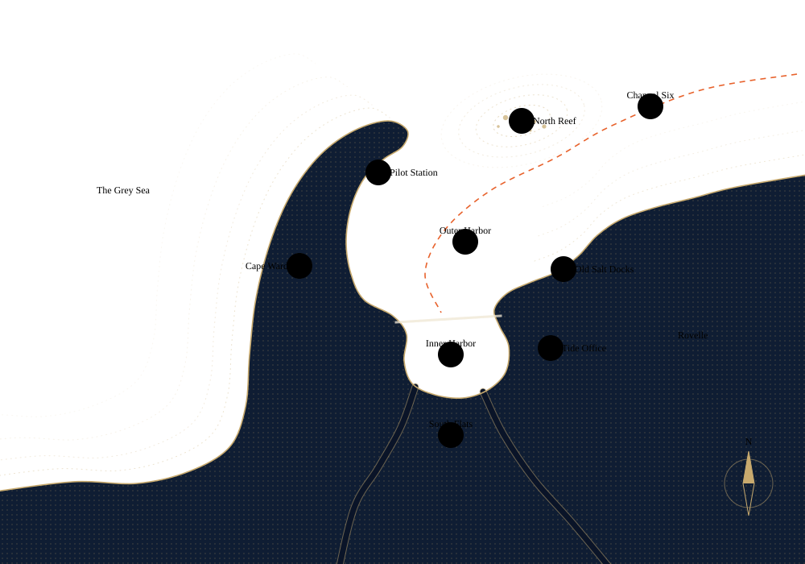

Rovelle
The harbor city
Built between a headland and two rivers, facing the Grey Sea. Rovelle records its tides, checks its instruments, and sometimes reaches a dangerous certainty too early. “Only the wind” is what it says when nobody has a better explanation yet.
A chart of Rovelle

Cape Ward
岬台The headland that shelters the harbor. Its church clock always strikes first. Mira was born on its south slope.
PrologueThe harbor's warning
Three bells
Rovelle does not announce danger in words. It rings. Everyone in the city knows how many bells mean what, and almost no one has heard the third.
Mind the water
A warning. Watch the tide and the sky. Nothing closes yet.
Three days north of Ailan
MØBIUS Station
A research station on a cape beside Vard Light, close enough to Ice Bay that the freeze decides when the last ship comes. Ten people winter there. It had no name of its own until the winter Mira arrived, when the deep-water survey had to be registered and someone wrote MØBIUS on the form in pencil, after the recorder's paper tape: a loop with a half twist, so it has only one side.
- Ada BrennerLeads the winter deep-water survey. Talks fast, writes slowly.
- Søren AskeHas kept the deep-water recorder for thirty-one winters.
- IlseRadio and weather reports. Covered two of Mira's night shifts.
- Jens OttesenResearcher. Recounted Mira's analysis and disagreed on one line.
- The catSenior to Mira.
Canon
Charted and uncharted
What the stories have established, and what they have deliberately left open. The full notes are in the canon file.
Charted
- Mira is seventeen in both stories so far.
- Rovelle is a harbor city, not a city of ring gates.
- Her parents' support and their absence both matter.
- She leaves Rovelle in December, by way of Ailan.
- MØBIUS is a station, named after a half-twisted paper tape.
Uncharted
- The rest of her contract year at MØBIUS.
- Whether she returns to Rovelle, and when.
- Her adult life and future relationships.
- How the station is organized beyond the people named.